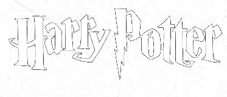
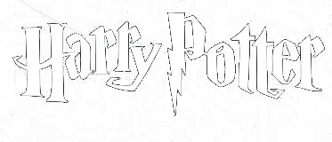
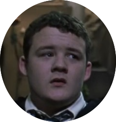
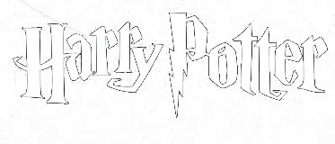

德拉科·马尔福：是卢修斯·马尔福和纳西莎·马尔福的独生子，家境富裕，拥有纯血统。 德拉科在书中被描述为一个脸色苍白、下巴尖细、拥有浅金色头发和灰色眼睛的人，性格傲慢、自大，鄙视麻瓜和麻瓜出身的巫师。
汤姆·里德尔出生于1926年12月31日，他的父亲是一个富有的麻瓜，名叫老汤姆·里德尔，而母亲则是一个女巫，名叫梅洛普·冈特。 梅洛普在汤姆出生后不久就去世了，他被留在了麻瓜孤儿院中长大。 1938年，汤姆·里德尔十一岁时进入霍格沃茨魔法学校，并被分入斯莱特林学院。他被认为是霍格沃茨招收的最有天赋的学生之一。在学校，他表现出色，成绩优异，并且最终成为了级长和男生学生会主席。 他在学校期间还荣获了优秀品德奖、特殊贡献奖等，并获得了梅林勋章。 尽管表面上看起来是一个英俊、有礼貌的孩子，但实际上汤姆·里德尔非常残忍、傲慢、残暴、好支使人、心理变态且狂妄自大。 他背地里广招人马集聚势力，在校内同一些狂热追随自己的同学成立了帮派（这个帮派就是食死徒的前身）。 汤姆·里德尔痴迷于自己的出身，并开始贪得无厌地研究它。他得知自己是斯莱特林的后代后，变得更加狂妄自大。他闭口不谈自己过去的劣迹，也未表现出悔意。他疯狂的崇拜纯血统，并希望有一天当他成为“世界上最伟大的巫师”时，可以让“全世界的巫师都害怕提到他的名字”。 他制作了多个魂器，包括他的日记本，并将一部分灵魂保存在里面，成为自己的第一个魂器。
圣人波特最近又在搞什么，他那两个跟班和他又开始整天神神秘秘的。
不知道，但肯定不是什么好事。
那我们是不是可以跟在他们后面，看他们干什么，然后举报他们，让格兰芬多扣分。
你们两个的脑子除了吃，终于有点用处了。话说回来波特最近越来越不修边幅了，那头糟糕的黑发里竟然还有羽毛，梅林的裤子，韦斯莱这样的纯血竟然和他混一起，简直是巫师届的耻辱。
